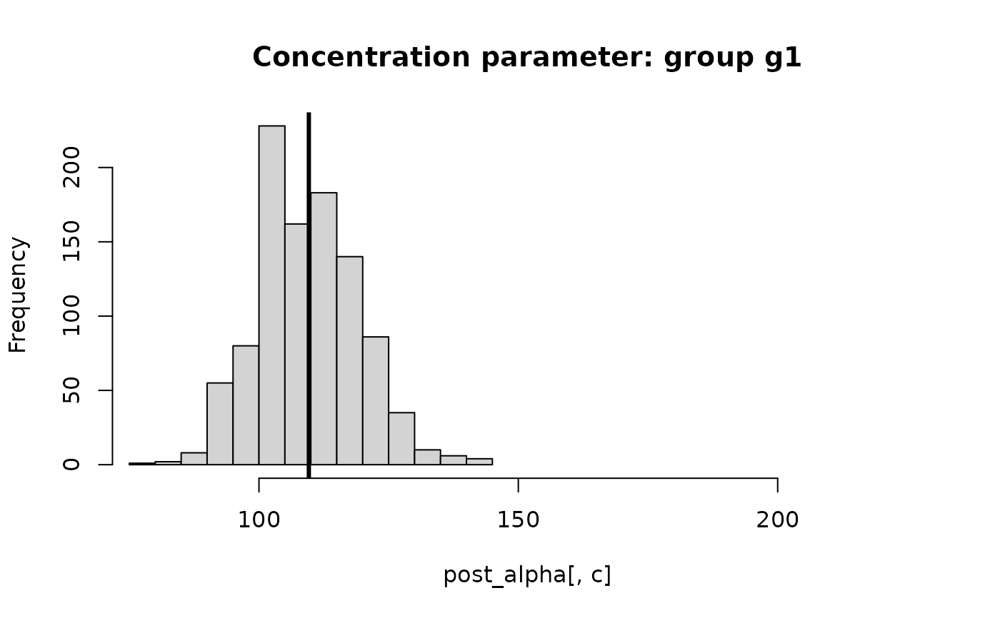
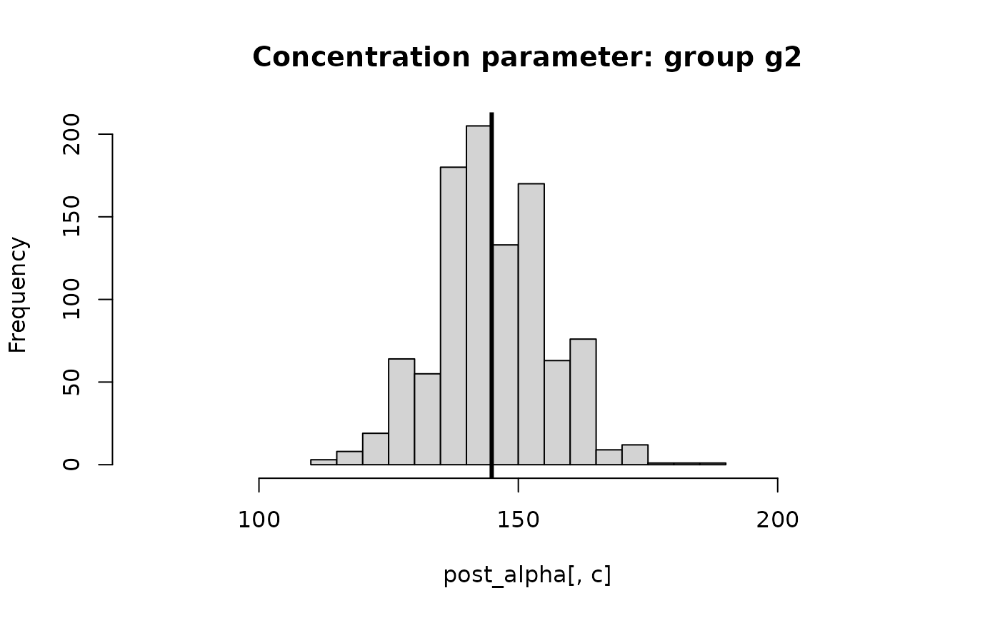

Posterior sampling algorithm for the HBB concentration hyperparameters
Source:R/helper_funs.R
concen_hbb.RdCompute Monte Carlo draws from the (marginal) posterior distribution of the
concentration hyperparameters of the hierarchical Bayesian bootstrap
(hbb). The HBB is a nonparametric model for group-specific
distributions; each group has a concentration parameter, where
larger values encourage more shrinkage toward a common distribution.
Details
The concentration hyperparameters are assigned
independent Gamma(shape_alphas, rate_alphas) priors.
This function uses a grid approximation to the marginal posterior
with the goal of producing a simple algorithm. Because this is a
*marginal* posterior sampler, it can be used with the hbb
sampler (which conditions on alphas) to provide a joint
Monte Carlo (not MCMC) sampling algorithm for the concentration
hyperparameters, the group-specific CDFs, and the common CDF.
Note that diffuse priors on alphas tend to put posterior mass on
large values, which leads to more aggressive shrinkage toward the common distribution
(complete pooling). For moderate shrinkage, we use the default values
shape_alphas = 30*K and rate_alphas = 1, where K is the
number of groups.
References
Oganisian et al. (https://doi.org/10.1515/ijb-2022-0051)
Examples
# Dimensions:
n = 500 # number of observations
K = 3 # number of groups
# Assign groups w/ unequal probabilities:
ugroups = paste('g', 1:K, sep='') # groups
groups = sample(ugroups,
size = n,
replace = TRUE,
prob = 1:K) # unequally weighted (unnormalized)
# Summarize:
table(groups)/n
#> groups
#> g1 g2 g3
#> 0.176 0.332 0.492
# Marginal posterior sampling for alpha:
post_alpha = concen_hbb(groups)
# Summarize: posterior distributions
for(c in 1:K) {
hist(post_alpha[,c],
main = paste("Concentration parameter: group", ugroups[c]),
xlim = range(post_alpha))
abline(v = mean(post_alpha[,c]), lwd=3) # posterior mean
}

